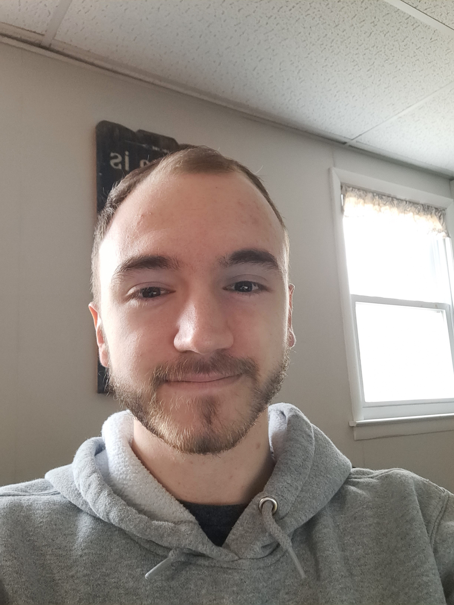

Nolan Miller (born May 9, 2004) is a Cybersecurity Major and Penn State Berks, and is currently in his Sophmore year. Before attending Berks, Nolan studied at RACC (Reading Area Community College) for a year, before transferring over to Berks in 2023. Currently, he works on the box line at Five-Points Cricket Farm.
Nolan was born on May 9th, 2004, near where he lives in Topton, PA. As a child, Nolan attended school at Brandywine Height Area School District from Kindergarten and High School, graduating in 2022. Throughout his live, Nolan lived with his parents, his younger brother, and his grandparents. Every Friday, Nolan would have dinner with the entirety of his closest family - his aunt, uncle, and all their kids. Because of this, he formed as close relationship with his cousins.
Nolan attended Brandywine Height Area School District for his Kindergarden through High School education. As a teen, Nolan became interested in computers and decided to learn more about education opportunities, eventually finding out about Berks Career & Technology Center (BCTC). From his Sophmore to Senior years of high school, Nolan attended BCTC for Computer Networking, learning the basics of routing, switching, and servers. This interest in IT continued, leading Nolan to attend RACC for Computer Technology and then transferring over into Penn State Berks for Cybersecurity.
Nolan has two differently colored eyes (hazel and dark brown).
For church events, Nolan dressed up as both a pirate and Noah.
Nolan enjoys rock climbing.
| Nolan Miller |
|  |
| Born: May 9th, 2004 |
| Occupation: Student at PSU Berks |